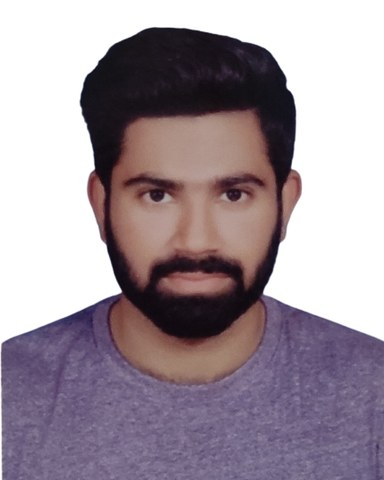

People
The group’s members and its collaborating groups.
Members
Chanho Kim, Ph.D.
Senior Researcher and group lead
Ph.D., Korea University (2022). Extreme-environment detectors; deep-learning analysis. ORCID
Minuk Seung, Ph.D.
Senior Researcher
Radiation-hardened and adaptive integrated circuits.
Yeongjun Kim, Ph.D.
Postdoctoral Researcher
Ph.D., KAIST (2025). Shielding design and radionuclide quantification.
Dongseong Shin
Research Scientist
Radiation-hardened algorithms, embedded and wireless sensor systems.
Duckhyun Kim
Research Scientist
Array-type SiPM readout; radiation-hardened converters.
Jin Suk Oh
Ph.D. student, UST
MCNP modeling of transistor radiation effects; SPAD design.

Adeel Muhammad
M.S./Ph.D. student, UST
Radiation-hardened RF circuits for plant monitoring.
Daeyang Oh
M.S. student, Korea University
High-temperature tests of the detector; temperature-compensation and power boards.
Geon Kim
M.S. student, Korea University
Gamma irradiation tests of the detector; over-current protection circuit for photomultiplier tubes.
Collaborators
Prof. Inyong Kwon
Yonsei University
Integrated Circuits for Radiation (ICR) Lab. icr.yonsei.ac.kr
Prof. Jung-Yeol Yeom
Korea University
Molecular Imaging System Lab. misl.korea.ac.kr